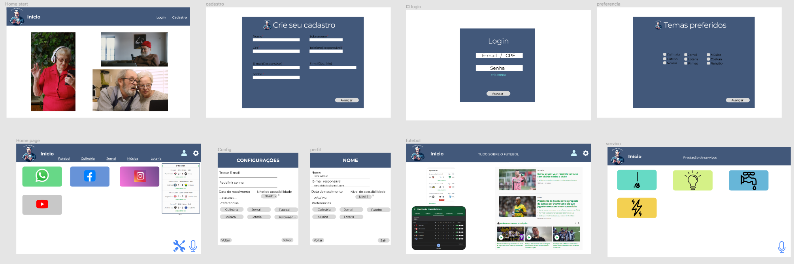
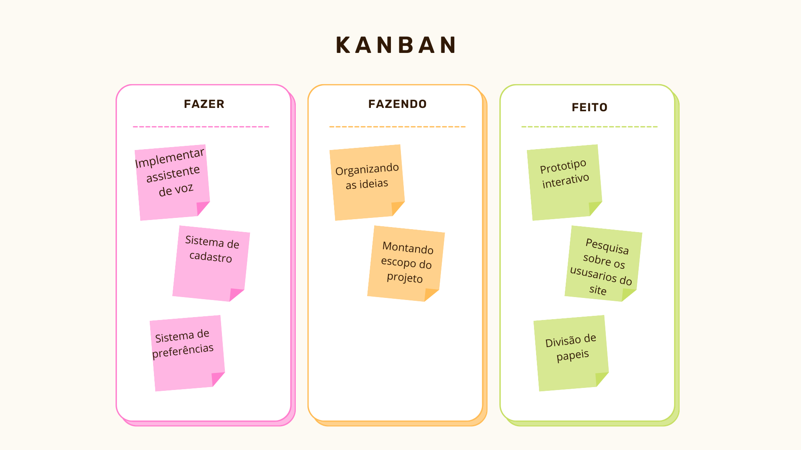
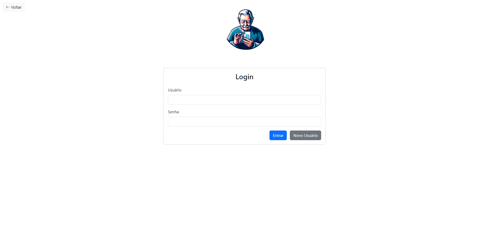
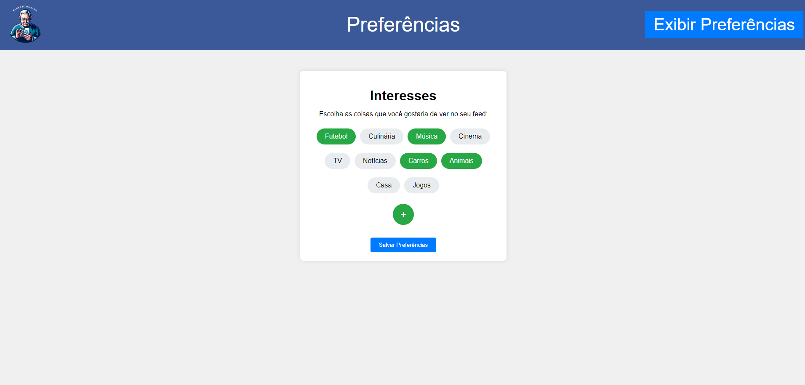
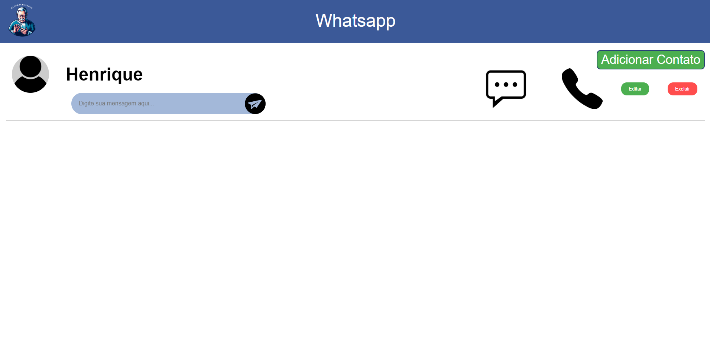

Introdução
Informações básicas do projeto como nome e membros da equipe.
Informações Gerais
- Projeto: Inclusão dos Idosos na Tecnologia
- Repositório GitHub: Inclusão dos idosos na tecnologia
- Membros da equipe:
Contexto
Detalhes sobre o espaço de problema, justificativas e os objetivos do projeto.
Problema
Idosos frequentimente encontram dificuldades ao utilizar os meios tecnológicos, como celurares e computadores, muitas vezes devido ao excesso de informação e à falta de objetividade, o que dificulta a capacidade acessar sites e aplicativos desejados pelos mesmos.
Objetivos
Simplificar, facilitar o acesso e incluir os idosos na tecnologia.
Justificativa
É notória a necessidade de simplicar a forma do usuário interagir com a tecnologia quando se trata de pessoas mais velhas, as quais ficam desnorteadas frente ao excesso de informação que compõe a internet.
Público-alvo
Idosos de mais de 60 anos que buscam utilizar a internet mas possuem dificuldades.
Concepção (Design Thinking)
Detalhes do processo de discovery do projeto.
Apresente o processo de discovery do projeto. Com foco na experiência do usuário, esse processo abrange a compreensão do contexto do problema e das características do usuário, a definição do problema, a geração de ideias, a prototipagem e a elaboração de uma proposta de solução
Processo de Design Thinking
O arquivo que se segue apresenta o resultado desse processo.
Apresente o processo de Design Thinking realizado pelo grupo e documentado por meio do software Miro. No documento apresentado, devem ser incluídos: (1) a matriz CSD, (2) o mapa de stakeholders, (3) as personas, (4) as respectivas propostas de valor e (5) o processo de ideação identificando as ideias levantadas e sua priorização.
Especificações do Projeto
Documentação das especificações do projeto.
Apresente as especificações do projeto, incluindo as histórias de usuário e os requisitos funcionais e não funcionais.
Histórias de Usuários
Com base na análise das personas foram identificadas as seguintes histórias de usuários:
Apresente aqui as histórias de usuário que são relevantes para o projeto de sua solução. As Histórias de Usuário consistem em uma ferramenta poderosa para a compreensão e elicitação dos requisitos funcionais e não funcionais da sua aplicação. Se possível, agrupe as histórias de usuário por contexto, para facilitar consultas recorrentes à essa parte do documento.
EU COMO...PERSONA |
QUERO/PRECISO...FUNCIONALIDADE |
PARA...MOTIVO/VALOR |
|---|---|---|
| Usuário do sistema | Menu unificado e simples | Acessar sites com mais facilidade |
| Administrador | Alterar permissões | Conseguir administrar contas e alterar dados |
Requisitos
As tabelas que se seguem apresentam os requisitos funcionais e não funcionais que detalham o escopo do projeto.
Com base nas Histórias de Usuário, enumere os requisitos da sua solução. Classifique esses requisitos em dois grupos:
- Requisitos Funcionais (RF): correspondem a uma funcionalidade que deve estar presente na plataforma (ex: cadastro de usuário).
- Requisitos Não Funcionais (RNF): correspondem a uma característica técnica, seja de usabilidade, desempenho, confiabilidade, segurança ou outro (ex: suporte a dispositivos iOS e Android).
Lembre-se que cada requisito deve corresponder à uma e somente uma característica alvo da sua solução. Além disso, certifique-se de que todos os aspectos capturados nas Histórias de Usuário foram cobertos.
Requisitos Funcionais
| ID | Descrição do Requisito | Prioridade |
|---|---|---|
| RF-000 | Cadastro Usuário | ALTA |
| RF-001 | Cadastro Prestador de serviço | ALTA |
| RF-002 | Personalização de interface baseada nas dificuldades | ALTA |
| RF-003 | Recomendação de conteúdo baseado nas preferências | ALTA |
| RF-004 | Prestação de serviços | MÉDIA |
| RF-005 | Tela de Introdução | ALTA |
| RF-006 | Tela prestador de serviços | ALTA |
| RF-007 | Tela principal do site | ALTA |
| RF-008 | Cadastro preferências | ALTA |
| RF-009 | Contatos integrados | MÉDIA |
Requisitos Não-Funcionais
| ID | Descrição do Requisito | Prioridade |
|---|---|---|
| RNF-001 | O sistema deve ser responsivo para rodar em um dispositivos móveis e desktop | MÉDIA |
| RNF-002 | Deve processar requisições de forma responsiva e intuitiva | BAIXA |
Projeto de Interface
Artefatos relacionados com a interface e a interacão do usuário na proposta de solução.
Apresente a ideia de interface que está sendo prevista para o projeto. Inclua os wireframes, o user/screen flow e o protótipo interativo.
User/Screen Flow e Protótipo interativo
Artefatos relacionados com a interface e a interacão do usuário na solução proposta.
O fluxo de usuário (User Flow) é uma técnica que permite ao desenvolvedor mapear todo fluxo de telas do site ou app. Essa técnica funciona para alinhar os caminhos e as possíveis ações que o usuário pode fazer junto com os membros de sua equipe. 
Wireframes
Protótipo de telas do sistema em baixa fidelidade (rascunhos).
Os Wireframes são protótipos das telas da aplicação usados em design de interface para sugerir a estrutura de um site web e seu relacionamentos entre suas páginas. Um wireframe web é uma ilustração semelhante ao layout de elementos fundamentais na interface. 

Metodologia
Detalhes sobre a organização do grupo e o ferramental empregado.
Nesta parte do documento, você deve apresentar a metodologia adotada pelo grupo, descrevendo o processo de trabalho baseado nas metodologias ágeis, a divisão de papéis e tarefas, as ferramentas empregadas e como foi realizada agestão de configuração do projeto via GitHub.
Coloque detalhes sobre o processo de Design Thinking e a implementação do Framework Scrum seguido pelo grupo. O grupo poderá fazer uso de ferramentas on-line para acompanhar o andamento do projeto, a execução das tarefas e o status de desenvolvimento da solução.
Ferramentas
Relação de ferramentas empregadas pelo grupo durante o projeto.
Liste as ferramentas empregadas no desenvolvimento do projeto, justificando a escolha delas, sempre que possível. Inclua itens como: (1) Editor de código, ferramentas de comunicação, ferramentas de diagramação, plataformas de hospedagem, entre outras.
| Ambiente | Plataforma | Link de Acesso |
|---|---|---|
| Processo de Design Thinking | Miro | https://miro.com/inclusaoidosos |
| Repositório de código | GitHub | https://github.com/g11-falta-de-acessibilidade-de-idosos |
| Hospedagem do site | Replit | https://XXXXXXX.herokuapp.com |
| Protótipo Interativo | Figma | https://figma.com/inclusaoidosos |
Gestão do Projeto
Divisão de papéis no grupo e apresentação da estrutura da ferramenta de controle de tarefas (Kanban).
Apresente a divisão de papéis e tarefas entre os membros do grupo. Informe quem é o Scrum Master, o Product Owner e os desenvolvedores. Informe também quem é o responsável pela documentação do projeto.
Apresente o quadro de gerenciamento do time (Kanban), seu formato e as experiências na utilização dessa ferramenta (GitHub Projects)

Controle de Versão
Estrutura do fluxo de trabalho no ambiente do GitHub.
Discuta como a configuração do projeto foi feita na ferramenta de versionamento (GitHub). Exponha como a gerência de tags, merges, commits e branchs é realizada. Discuta como a gerência de issues foi realizada.

Controle de Versão Estrutura do fluxo de trabalho no ambiente do GitHub. Para fazer o controle de versão foi utilizado o Git, uma ferramenta muito usada na área de tecnologia e desenvolvimento de software. Sendo assim, é possível ter diferentes versões do código fonte ao mesmo tempo e mesmo assim é possível aplicar as modificações de maneira segura. Logo, foram utilizados alguns comandos para manter essa versão do código, como: Git branch = possibilita criar e gerenciar branchs Git checkout = posssibilita alterar entre as diferentes branchs Git merge = possibilita incorporar mudanças de um branch em outro Git push = possibilita enviar as alterações locais para um repositório remoto Git pull = permite atualizar local com alterações do repositório remoto
Solução
Esta seção apresenta todos os detalhes da solução criada no projeto.
Para facilitar a localização de conteúdos, teremos uma página que direcionará o usuário até o conteúdo de seu interesse.
Para eliminar as dificuldades de enviar mensagens para contatos errados ou de não encontrar seus contatos mais frequentes, desenvolvemos uma página que salva os contatos favoritos. Assim, você poderá escrever sua mensagem diretamente no site, que encaminhará a mensagem para o WhatsApp da pessoa desejada.
O idoso que precisa de um prestador de serviço de confiança poderá encontrar em nosso site uma aba onde encontrará profissionais qualificados prontos para ajudá-lo.
Video do Projeto
O vídeo a seguir traz uma apresentação do problema que a equipe está tratando e a proposta de solução.
O video de apresentação é voltado para que o público externo possa conhecer a solução. O formato é livre, sendo importante que seja apresentado o problema e a solução numa linguagem descomplicada e direta.
Utilize o recurso de compartilhamento via embed e inclua o vídeo logo abaixo.
...... COLOQUE AQUI O SEU VIDEO ......
Funcionalidades
Esta seção apresenta as funcionalidades da solução.
Cada usuário terá uma propria conta que o direcionara para os seus interesses.
Cada usuário pora escolher os tópicos nos quais tem maio interesse.
O Usuário podera colocar os seus contatos favoritos do WhatsApp em nossa tela para facilitar a forma de enviar suas mensagens.
O site veirá integrado com um sistema de prestação de serviços, onde o usuário poderá encontrar um prestador de serviço para lhe ajudar.
Funcionalidade 1 - Tela Inicial
Página inicial do site, apresentando informações sobre o próprio site e destacando algumas de suas funcionalidades.
- Instruções de acesso:
- Abra o site
- Aperte em entrar para entrar no site.

Funcionalidade 2 - Login
Login do site
- Instruções de acesso:
- Efetue o login
- Caso não tenha ainda crie um
- Em seguida, será direcionado para a tela de preferências.

Funcionalidade 3 - Preferências
Preferências
- Instruções de acesso:
- Escolha suas preferências e as salve.

Funcionalidade 4 - Home Page
Home-Page
- Instruções de acesso:
- Nessa pagina você ira escolher as funcionalidades que deseja, como youtube, WhatsApp, facebook, instagram ou serviços.

Funcionalidade 5 - Mensagem
Mensagem
- Instruções de acesso:
- O usuário ira cadastrar o contato de interesse
- Após cadastrar o mesmo, ele poderá escrever a mensagem desejada e enviala pelo WhatsApp.

Funcionalidade 6 - Serviços
Serviços
- Instruções de acesso:
- O usuário ira ver quais serviços estarão disponiveis para ele contrar
- Após o contrato o usuário irá esperar que o prestador de serviço chegue até a sua casa.
Estruturas de Dados
Descrição das estruturas de dados utilizadas na solução com exemplos no formato JSON.
Apresente as estruturas de dados utilizadas na solução tanto para dados utilizados na essência da aplicação quanto outras estruturas que foram criadas para algum tipo de configuração
Nomeie a estrutura, coloque uma descrição sucinta e apresente um exemplo em formato JSON.
Estrutura de Dados - Usuários
Registro dos usuários do sistema utilizados para login e para o perfil do sistema
{
"id": "187cb7e5-e097-4224-8bc7-b610c855e2b1",
"login": "admin",
"senha": "123",
"nome": "Administrador do Sistema",
"email": "admin@abc.com"
}
Estrutura de Dados - Usuários Prestador de Serviço
Registro dos usuários do sistema utilizados para login e para o perfil do sistema
{
"id": "187cb7e5-e097-4224-8bc7-b610c855e2b1",
"login": "admin",
"senha": "123",
"nome": "Administrador do Sistema",
"email": "admin@abc.com"
}
Estrutura de Dados - Preferências
Registro dos usuários do sistema utilizados para login e para o perfil do sistema
{
"id": "187cb7e5-e097-4224-8bc7-b610c855e2b1",
"login": "admin",
"senha": "123",
"nome": "Administrador do Sistema",
"email": "admin@abc.com"
}
Estrutura de Dados - Contatos
Contatos da aplicação
{
"id": 1,
"nome": "João Silva",
"telefone": "(31) 1234-5678",
"email": "joao.silva@example.com"
}
Módulos e APIs
Esta seção apresenta os módulos e APIs utilizados na solução.
Apresente os módulos e APIs utilizados no desenvolvimento da solução. Inclua itens como: (1) Frameworks, bibliotecas, módulos, etc. utilizados no desenvolvimento da solução; (2) APIs utilizadas para acesso a dados, serviços, etc.
Images:
- Unsplash - https://www.pexels.com/pt-br/
Scripts:
- Login - https://replit.com/@rommelpuc
- WhatsApp - https://api.whatsapp.com/
FAQ
Perguntas e respostas comuns associadas ao projeto.
Apresente uma lista de perguntas e respostas comuns associadas ao projeto. Inclua perguntas como: (1) detalhes de acesso e uso do projeto; (2) informações sobre a instalação e configuração da aplicação; (3) questões sobre a manutenção da aplicação; (4) detalhes sobre a integração da aplicação com outros sistemas; (5) questões sobre a segurança da aplicação.
Referências Bibliográficas
Esta seção apresenta as referências bibliográficas utilizadas no projeto.
Apresente as referências bibliográficas utilizadas no projeto. Inclua itens como: (1) livros, artigos, tutoriais, etc. utilizados no desenvolvimento da solução; (2) links para sites, blogs, etc. utilizados no desenvolvimento da solução.
Politicas de Envelhecimento Populacional - Volume 2